Теория
Строение алкенов
Алкены — ациклические углеводороды, содержащие в молекуле помимо одинарных связей, одну двойную связь между атомами углерода и соответствующие общей формуле СnН2n.
Свое второе название — олефины — алкены получили по аналогии с жирными непредельными кислотами (олеиновая, линолевая), остатки которых входят в состав жидких жиров — масел (от англ. oil — масло).
Атомы углерода, между которыми есть двойная связь, находятся в состоянии sр2-гибридизации. Это означает, что в гибридизации участвуют одна s- и две р-орбитали, а одна р-орбиталь остается негибридизованной.
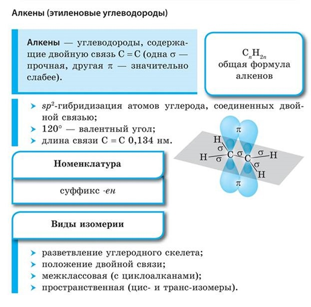
Перекрывание гибридных орбиталей приводит к образованию σ-связи, а за счет негибридизованных р-орбиталей соседних атомов углерода образуется вторая, π-связь. Таким образом, двойная связь состоит из одной σ- и одной π-связи.
Гибридные орбитали атомов, образующих двойную связь, находятся в одной плоскости, а орбитали, образующие π-связь, располагаются перпендикулярно плоскости молекулы.
Двойная связь (0,132 нм) короче одинарной, а ее энергия больше, т. к. она является более прочной. Тем не менее, наличие подвижной, легко поляризуемой π-связи приводит к тому, что алкены химически более активны, чем алканы, и способны вступать в реакции присоединения.
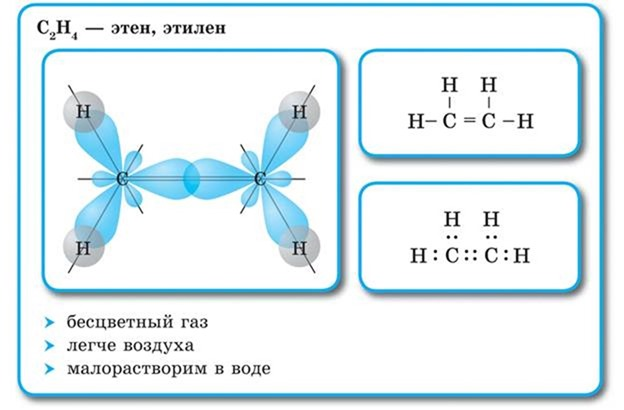
Гомологический ряд алкенов
Первые три члена гомологического ряда алкенов газы, с C5H10 до C17H34 – жидкости, с C18H36 – твердые вещества. Жидкие и твердые алкены практически нерастворимы в воде, но хорошо растворимы в органических растворителях.
В соответствии с правилами ИЮПАК, в названии гомологов ряда алкенов используется суффикс -ен. Положение двойной связи указывается с помощью цифры, обозначающей месторасположение связи. Цифра проставляется после названия основной цепи через дефис. Нумерация атомов в молекуле алкена начинается с того конца, к которому ближе связь, например, алкен, отвечающий формуле CH3−CH2−CH=CH−CH3 следует называть пентен-2, поскольку связь начинается у второго атома углерода, начиная с конца цепи.
Неразветвленные алкены составляют гомологический ряд этена (этилена): С2Н4 — этен, С3Н6 — пропен, C4H8 — бутен, С5Н10 — пентен, С6Н12 — гексен и т. д.
Изомерия и номенклатура алкенов
Для алкенов, так же как и для алканов, характерна структурная изомерия. Структурные изомеры отличаются друг от друга строением углеродного скелета. Простейший алкен, для которого характерны структурные изомеры, — это бутен.
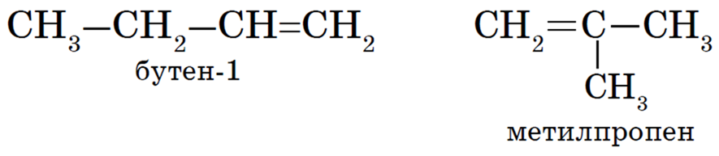
Особым видом структурной изомерии является изомерия положения двойной связи:
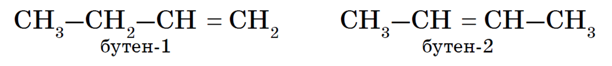
Вокруг одинарной углерод-углеродной связи возможно практически свободное вращение атомов углерода, поэтому молекулы алканов могут приобретать самую разнообразную форму. Вращение вокруг двойной связи невозможно, что приводит к появлению у алкенов еще одного вида изомерии — геометрической, или цис- транс-изомерии.
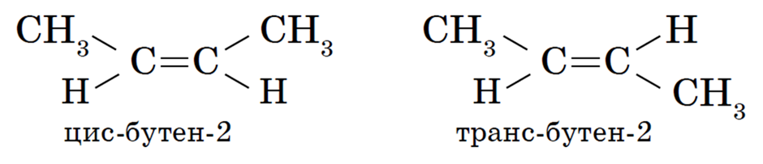
Цис-изомеры отличаются от транс-изомеров пространственным расположением фрагментов молекулы (в данном случае метильных групп) относительно плоскости π-связи, а следовательно, и свойствами.
Алкены изомерны циклоалканам (межклассовая изомерия), например:
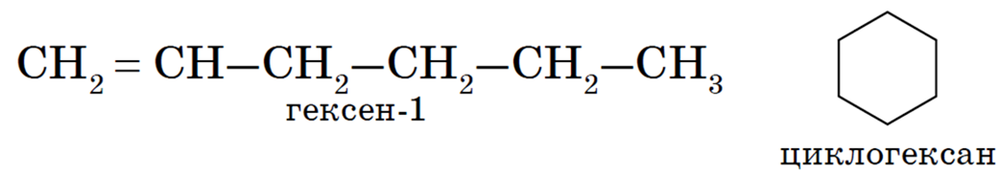
Номенклатура алкенов, разработанная ИЮПАК, схожа с номенклатурой алканов.
1. Выбор главной цепи. Образование названия углеводорода начинается с определения главной цепи — самой длинной цепочки атомов углерода в молекуле. В случае алкенов главная цепь должна содержать двойную связь.
2. Нумерация атомов главной цепи. Нумерация атомов главной цепи начинается с того конца, к которому ближе находится двойная связь. Например, правильное название соединения:
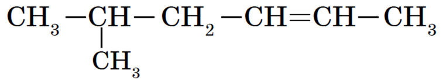
5-метилгексен-2, а не 2-метилгексен-4, как можно было бы предположить.
Если по положению двойной связи нельзя определить начало нумерации атомов в цепи, то его определяет положение заместителей так же, как для предельных углеводородов.
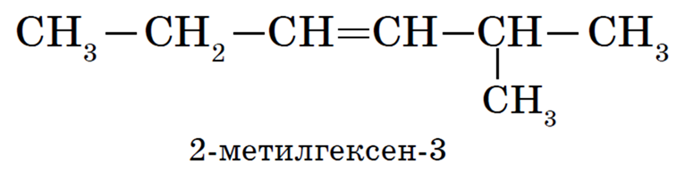
3. Формирование названия. Названия алкенов формируются так же, как и названия алканов. В конце названия указывают номер атома углерода, у которого начинается двойная связь, и суффикс -ен, обозначающий принадлежность соединения к классу алкенов. Например:
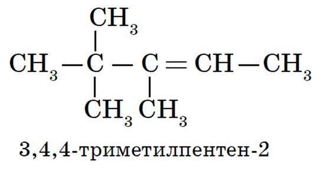
Физические свойства алкенов
Первые три представителя гомологического ряда алкенов — газы; вещества состава С5Н10 — С16Н32 — жидкости; высшие алкены — твердые вещества.
Температуры кипения и плавления закономерно повышаются при увеличении молекулярной массы соединений.
Химические свойства алкенов
Реакции присоединения. Напомним, что отличительной чертой представителей непредельных углеводородов — алкенов является способность вступать в реакции присоединения. Большинство этих реакций протекает по механизму электрофильного присоединения.
1. Гидрирование алкенов. Алкены способны присоединять водород в присутствии катализаторов гидрирования, металлов — платины, палладия, никеля:
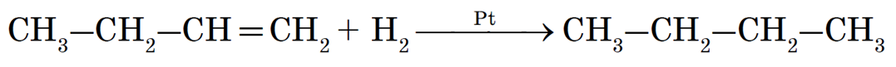
Эта реакция протекает при атмосферном и повышенном давлении и не требует высокой температуры, т. к. является экзотермической. При повышении температуры на тех же катализаторах может пойти обратная реакция — дегидрирование.
2. Галогенирование (присоединение галогенов). Взаимодействие алкена с бромной водой или раствором брома в органическом растворителе (CCl4) приводит к быстрому обесцвечиванию этих растворов в результате присоединения молекулы галогена к алкену и образования дигалогеналканов:
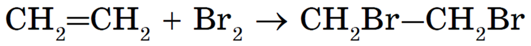
3. Гидрогалогенирование (присоединение галогеноводорода).
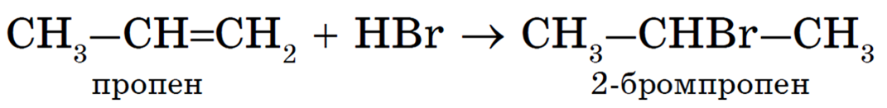
Эта реакция подчиняется правилу Марковникова:
При присоединении галогеноводорода к алкену водород присоединяется к более гидрированному атому углерода, т. е. атому, при котором находится больше атомов водорода, а галоген — к менее гидрированному.
4. Гидратация (присоединение воды). Гидратация алкенов приводит к образованию спиртов. Например, присоединение воды к этену лежит в основе одного из промышленных способов получения этилового спирта:
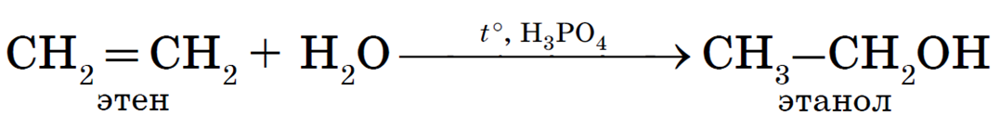
Обратите внимание на то, что первичный спирт (с гидроксогруппой при первичном углероде) образуется только при гидратации этена. При гидратации пропена или других алкенов образуются вторичные спирты.
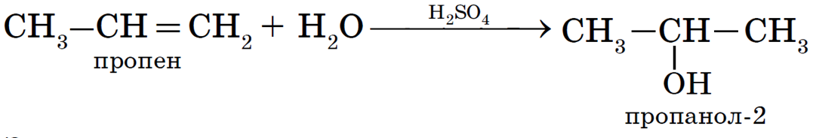
Эта реакция протекает также в соответствии с правилом Марковникова — катион водорода присоединяется к более гидрированному атому углерода, а гидроксогруппа — к менее гидрированному.
5. Полимеризация. Особым случаем присоединения является реакция полимеризации алкенов:
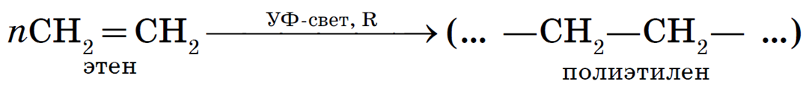
Эта реакция присоединения протекает по свободнорадикальному механизму.
Реакции окисления.
1. Горение. Как и любые органические соединения, алкены горят в кислороде с образованием СО2 и Н2О:
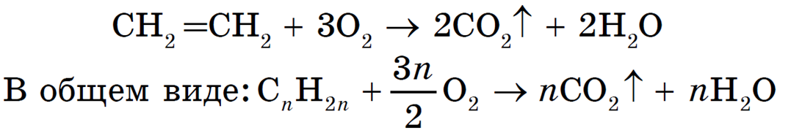
2. Окисление в растворах. В отличие от алканов алкены легко окисляются под действием растворов перманганата калия. В нейтральных или щелочных растворах происходит окисление алкенов до диолов (двухатомных спиртов), причем гидроксильные группы присоединяются к тем атомам, между которыми до окисления существовала двойная связь:
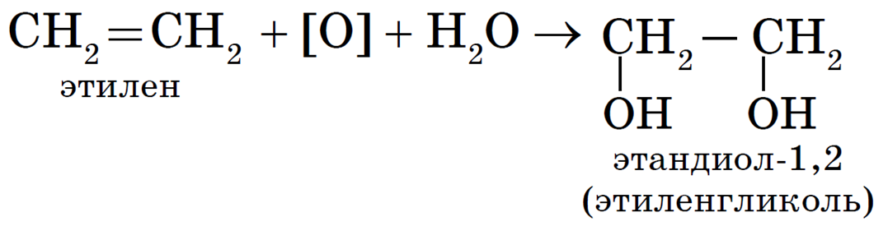
Шпаргалка
Алкены
Видео
Изобретение резины
Создание шин
Практика
-
Вещество, формула которого С4Н8 можно отнести к
- алкадиенам
- алкенам
- алкинам
- алканам
-
В молекуле этилена между атомами углерода образуется
- две π-связи
- две σ-связи
- одна σ- и одна π-связь
- две π- и одна σ- связь
- Укажите формулу пентена-2:
- CH3-CH=CН-CH3;
- CH2= CH-CН2-CH3;
- СН2= СН-СН2-СН2-СН3;
- СН3-СН=СН-СН2-СН3
- Только реакции замещения характерны для
- алканов
- алкенов
- При взаимодействии бутена-1 с бромоводородом образуется преимущественно
- 2-бромбутан
- 2-бромбутен-1
- 1-бромбутан
- 1-бромбутен-1
Лабораторная работа
ТЕМА: НЕПРЕДЕЛЬНЫЕ УГЛЕВОДОРОДЫ. АЛКЕНЫ.АЛКИНЫ.(ЧАСТЬ1)
Прочитайте соответствующие разделы учебника.[2]Глава 3. Тема§9-11. Алкены (стр. 34-44)
Ключевые слова: алкен, геометрическая изомерия, двойная связь, качественные реакции, ненасыщенный, олефины, строение, этиленовый углеводород, этен, этилен, sp2-гибридизация.
ЗАДАЧИ И УПРАЖНЕНИЯ:
- Закончите определение: Алкенами называют
…………………………………………………………………………………………………………………………………………………………………………………….
…………………………………………………………………………………………………………………………………………………………………………………….
- Дайте характеристику класса алкенов
ХАРАКТЕРИСТИКА АЛКЕНОВ
……………………………………………………………………………………………………….
………………………………………………………………………………………………………………………………………………………………………………………………………………………………………………………………………………………………………………………………
………………………………………………………………………………………………………………………………………………………………………………………………………………………………………………………………………………………………………………………………
- Заполните таблицу по образцу
Алкен |
Структурная формула |
Числоатомов углерода |
Число атомов водорода |
1-пентен |
5 |
10 |
|
Изобутилен
|
|
|
|
2-бутен |
|
|
|
2-метил-2-гексен
|
|
|
|
Метил-пропил- этилен
|
|
|
|
- Какие виды изомерии характерны для алкенов?
А) ……………………….,………………………………………………………………….
Б) …………………………………………………………………………………………….
В)………..……………………………………………………………………………………
- Приведите примеры геометрических изомеров для 2-бутена.
……………………………………………………………………………………………………………………………………………………………………………………………………………………………………………………………………………………………………………………………………………………………………………………………………………………………………………………………………………………………………………………………………………………
- Составьте структурные формулы изомеров углеводорода состава С5Н10 и назовите их
……………………………………………………………………………………………………………………………………………………………………………………………………………………………………………………………………………………………………………………………………………………………………………………………………………………………………………………………..……………………………………………………………………………………………………………..……………………………………………………………………………………………………………..……………………………………………………………………………………………………………..……………………………………………………………………
- Напишите уравнения химических реакций, с помощью которых можно осуществить следующие превращения: этан ͢1 этилен 2͢ полиэтилен. Назовите области его применения.
………………………………………………………………………………………………………………………………………………………………………………………………………………………………………………………………………………………………………………………………………………………………………………………………………………………………………………………………………………………………………………………… |
- Напишите уравнения реакций присоединения к этилену. Дайте название этим реакциям.
А) воды
………………………………………………………………………………………………
Б) водорода
………………………………………………………………………………………………
В) хлороводорода
………………………………………………………………………………………………
- Отметьте в таблице области применения перечисленных в ней химических веществ этилена. Из букв, соответствующих правильным ответам, Вы составите название основного компонента природного газа: _______________________________________________
Химические свойства и применение этилена
Применение реакции и ее продуктов |
Химические свойства |
|||
Реакция с бромной водой |
Реакция с водой |
Полимеризация |
Реакция с перманганатом калия |
|
Получение этилового спирта |
П
|
М |
Р |
С |
Идентификация непредельных соединений |
Е |
О |
К |
Т |
Производство полиэтилена |
С
|
П |
А |
Б |
Производство галогенсодержащих органических растворителей |
Н |
Е |
М |
И |
- Уайт- спирит применяют для удаления масленых пятен с текстильных волокон, при химической чистке одежды. Опишите, как определить содержит ли уайт-спирт алкены?
…………………………………………………………………………………………………………………………………………………………………………………………………………………………………………………………………………………………………………………………………………………………………………………………………………………………………………
- Соедините на схеме стрелками прямоугольники «Свойства полиэтилена» с названиями предметов, в которых эти свойства используются.
Свойства полиэтилена
Тонкие пленки прозрачны
Трубы для водоснабжения
Обложки для тетрадей
Низкая газо- и водопроницаемость
Медицинские шприцы
Пленка для парников
Пропускает УФ лучи
Упаковочная пленка
Изоляция проводов
Не проводит электрический ток
ТЕМА: НЕПРЕДЕЛЬНЫЕ УГЛЕВОДОРОДЫ. АЛКЕНЫ. АЛКИНЫ.(ЧАСТЬ2)
Прочитайте соответствующие разделы учебника.[ 2 ]Рздел3. Тема. §12-13. Алкины (стр.44-50)
Ключевые слова: алкин, ацетилен, ацетиленовые углеводороды, гомолог, линейный, качественные реакции, кратные связи, реакция Кучерова, тройная связь, sp-гибридизация.
ЗАДАЧИ И УПРАЖНЕНИЯ:
- Напишите общую формулу для алкинов …………………………………………………………………………………………………………
- Для соединения формула которого:
СН= С – СН2 – СН2 – СН2 – СН3
составьте сокращенные структурные формулы:
……………………………………………………………………………………………….………..………………………………………………………………………………………………………………………………………………………………………………………………………………………………………………………………………………………………………………………………
…………………………………………………………………………………………………………
…………………………………………………………………………………………………………
- Закончите уравнения реакций получения ацетилена из карбида кальция (А) и природного газа (Б):
А) СаС2 + 2НОН ……………………………………………………………………….
Б) 2СН4 …………………………………………………………………………………
- Где применяют ацетилен и его соединения?
……………………………………………………………………………………………….…….…………………………………………………………………………………………………..……………………………………………………………………………………………………………….
- Перед Вами ряд превращений. Составьте уравнения реакций, соответствующих данным превращениям:
Н3С-СН2ОН → СН2=СН2 → СН2Br-СН2Br→ С2Н2→ CН3-СНСI2
А) ………………………………………………………………………………………………….……………………………………………………………………………………………………………
Б) …………………………………………………………………………………………………..……………………………………………………………………………………………………………..
В) ………………………………………………………………………………………………….…………………………………………………………………………………………………………….
Г) …………………………………………………………………………………………………..……………………………………………………………………………………………………………..
- Напишите уравнения реакций этина и пропина с водой в присутствии HgSO4 (реакция Кучерова). Назовите продукты реакций.
А) …………………………………………………………………………………………………..…………………………………………………………………………………………………………….
Б) …………………………………………………………………………………………………..…………………………………………………………………………………………………………….
- Составьтесловосочетанияпообразцу.
1-е слово |
2-е слово |
Словосочетание |
Функциональная |
строение |
Функциональная группа |
Гомологический |
замещения |
|
Пространственная |
углеводороды |
|
Реакции |
соединения |
|
Предельные |
группа |
|
Нециклическое |
ряд |
|
Реакция |
изомерия |
|
Структурная |
углеводороды |
|
Высокомолекулярные |
полимеризации |
|
Непредельные |
изомерия |
|
Объясните, можно ли использовать раствор перманганата калия или бромную воду для распознавания:
……………………………………………………………………………………………………………………………………………………………………………………………………………………
- Отметьте в Таблице области применения перечисленных в ней реакций. Из букв, соответствующих правильным ответам, Вы составите название радикала, формула которого СН2=СН-_____________________________________________________________________
Применение реакции и ее продуктов
|
Химические свойства |
||||
Реакция с бромной водой |
Реакция горения |
Реакция с водой |
Реакция с хлороводородом |
Реакция с перманганатом калия |
|
Идентификация непредельных соединений |
В |
А |
М |
Т |
И |
Резка и сварка металлов |
Е |
Н |
О |
С |
Е |
Получение мономера для производства поливинилхлорида |
Ы |
Ч |
Б |
И |
Е |
Производство уксусного ангидрида |
Г |
С |
Л |
Ш |
З |
- Какой объем ацетилена (н.у.)можно получить при взаимодействии 51,2кг карбида кальция с водой , если массовая доля выхода ацетилена составляет 0,9 от теоретического выхода.